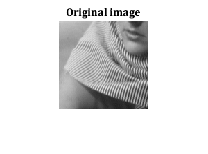
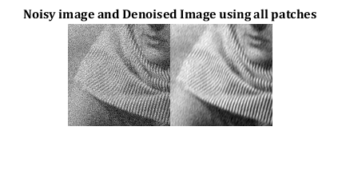
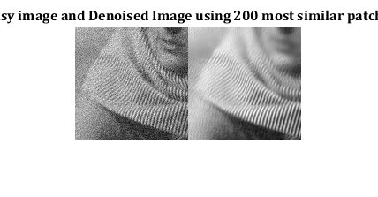
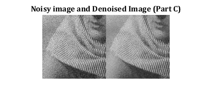
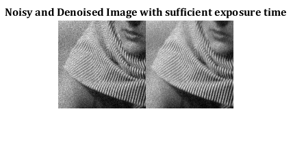
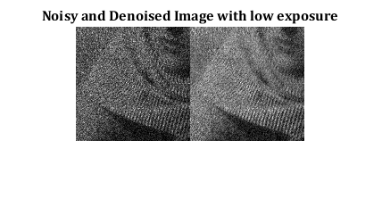

Contents
MyMainScript
close all
clear all
clc
im = double(imread('../data/barbara256-part.png'));
adding gaussian noise
sigma = 20;
im1_gaussian = im+randn(size(im)).*sigma;
Part (A)
tic;
im2_a = myPCADenoising1(im1_gaussian,[7 7],sigma);
rmse = norm((im2_a-im),'fro')/norm(im,'fro');
disp('RMSE in Part A:');
disp(rmse);
figure;
imshow(im/255);
title('Original image', 'Fontsize', 12, 'Fontname', 'Cambria');
figure;
imshowpair(im1_gaussian/255, im2_a/255, 'montage');
title('Noisy image and Denoised Image using all patches', 'Fontsize', 12, 'Fontname', 'Cambria');
RMSE in Part A:
0.0632
 
Part (B)
im2_b = myPCADenoising2(im1_gaussian,[7 7], [31,31], sigma, 200);
rmse = norm((im2_b-im),'fro')/norm(im,'fro');
disp('RMSE in Part B:');
disp(rmse);
figure;
imshowpair(im1_gaussian/255, im2_b/255, 'montage');
title('Noisy image and Denoised Image using 200 most similar patches', 'Fontsize', 12, 'Fontname', 'Cambria');
RMSE in Part B:
0.0775

Part (C)
im2_c = myBilateralFiltering(im1_gaussian,5,sigma);
rmse = norm((im2_c-im),'fro')/norm(im,'fro');
disp('RMSE using Bilateral Filtering is:');
disp(rmse);
figure;
imshowpair(im1_gaussian/255, im2_c/255, 'montage');
title('Noisy image and Denoised Image (Part C)', 'Fontsize', 12, 'Fontname', 'Cambria');
RMSE using Bilateral Filtering is:
0.0969

Part (D)
im1_poisson = poissrnd(im);
im2_poisson = myPCADenoising2(sqrt(im1_poisson), [7,7], [31 31], 0.25, 200);
im2_poisson = im2_poisson.^2;
rmse = norm((im2_poisson-im1_poisson),'fro')/norm(im,'fro');
disp('RMSE for sufficient exposure time is:');
disp(rmse);
figure;
imshowpair(im1_poisson/255.0, im2_poisson/255.0, 'montage');
title('Noisy and Denoised Image with sufficient exposure time', 'Fontsize', 12, 'Fontname', 'Cambria');
im1_poisson_le = poissrnd(im/20);
im2_poisson_le = myPCADenoising2(sqrt(im1_poisson_le), [7,7], [31 31], 0.25, 200);
im2_poisson_le = im2_poisson_le.^2;
rmse = norm((im2_poisson_le-im1_poisson),'fro')/norm(im,'fro');
disp('RMSE for low exposure time is:');
disp(rmse);
figure;
imshowpair(im1_poisson_le/255.0, im2_poisson_le/255.0, 'montage');
title('Noisy and Denoised Image with low exposure', 'Fontsize', 12, 'Fontname', 'Cambria');
toc;
RMSE for sufficient exposure time is:
0.0302
RMSE for low exposure time is:
0.9543
Elapsed time is 93.592689 seconds.
 